| イギリスの古いもの: アンティークな見方 | |
| 英吉利物屋（いぎりすもんや） | |
| (2019) | |
イギリスの古いもの：アンティークな見方
アンデルセン童話『シリング銀貨』から読み解く、ヴィクトリアン アンティーク
スタンホープ：ヴィクトリア時代の発明品、夏目漱石も『猫』で使う
ジャポニスム：オールコック初代駐日公使は、日本のよさを海外に紹介
太平の眠りを覚ます上喜撰（蒸気船）、たった四杯（四艘）で夜も眠れず
一、アンデルセン童話『シリング銀貨』から読み解く、ヴィクトリアン アンティーク
二、ヴィクトリアン バターナイフは黒船来航の頃の作
『太平の眠りを覚ます上喜撰（蒸気船）、たった四杯（四艘）で夜も眠れず』
三、英国のユーモアを集約していると言われる『パンチ』
四、ユンハンス 木製ケース 置時計
189 0 年か ら 189 9 年までの十年間の作と絞り込めるのは、イギリス人好み。
五、ヴィクトリアン ロケットのジャポニスム
オールコック初代駐日公使は、日本のよさを広く海外に紹介してくれた
Art and Art Industries of Japa n（ 187 8 年 、 Sir Rutherford Alcoc k ）
六、スタンホープ：ヴィクトリア時代の発明品、夏目漱石も『猫』で使う
七、ぎゅっとした銀塊の風情を醸した工芸品 ヴィクトリアンのマッチケース
八、ガリレオが木星の四つの衛星を発見したことで有名なガリレオ式望遠鏡と呼ばれるもの
一、アンデルセン童話『シリング銀貨』から読み解く、ヴィクトリアン アンティークの背景
アンデルセン童話の『シリング銀貨』で lucky shillin g にまつわる台詞。
'Very likely thou art a lucky shilling. A thought has just struck me that it is so, and I believe it. Yes, I will make a hole in the shilling,' said she, 'and run a string through it, and then give it to my neighbor's little one to hang round her neck, as a lucky shilling.'
「この銀貨、ラッキーシリングに違いないわ。ふと思い浮かんだの、そう思うわ。そうだ、シリングに穴をあけて、紐を通して、お隣のお子さんの首飾りにしてあげましょう。ラッキーシリングとしてね。」
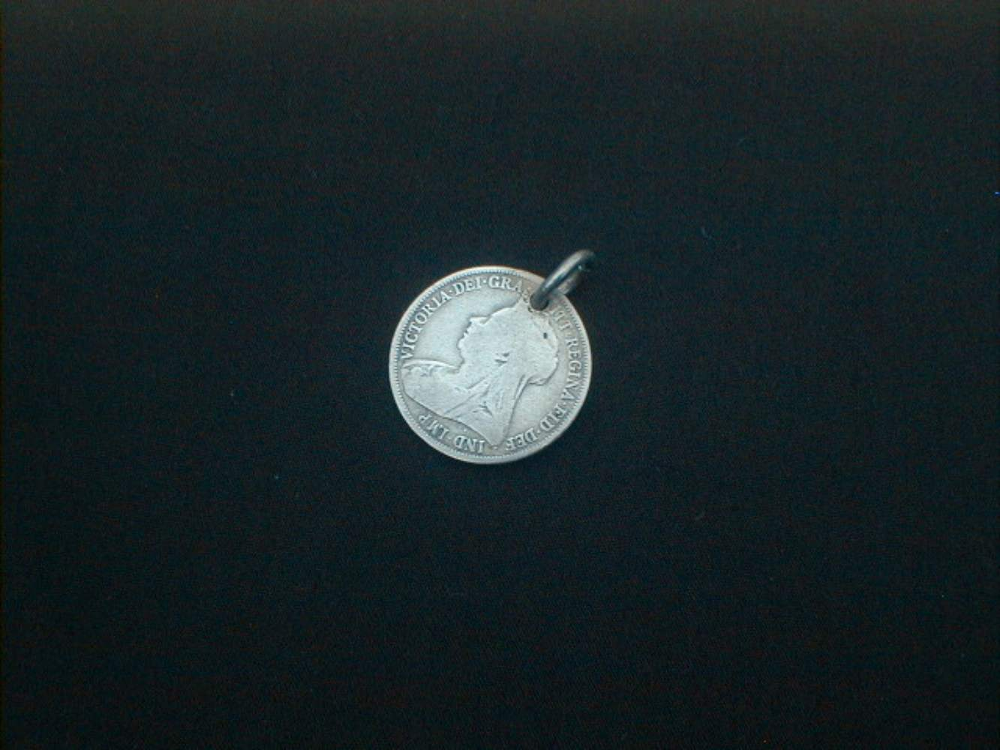
『裸の王様』、『みにくいアヒルの子』、『人魚姫』などで有名なアンデルセンの作品の中に 、 1 9 世紀半ばに書かれた『シリング銀貨』というおとぎ話があります。外国旅行に出かけた英国紳士の財布にあった一枚のシリング銀貨が、異国の地で財布からこぼれてしまい、いろいろな人たちを巡りめぐって、最後には元々の持ち主であった英国紳士のもとに戻ってくるというストーリーです。
物語の中で、シリング銀貨に穴をあけて糸を通し 「 Lucky Shillin g 」として身に着けるという話が出てきます。シリングは大き過ぎず、小さ過ぎず、ペンダントヘッドにちょうど良いサイズであることと、シルバーという素材は幸福に通じることから、遠いヴィクトリアンの時代よりラッキーシリングとして好まれてきたようです。
イギリスではシリング銀貨のシンプルなペンダントヘッドを時に見かけます。アクセサリーにしては、あまりに作りが簡単なので、どうしてだろうかと不思議に思っていたのですが、この品の背景の一つに、アンデルセンの『シリング銀貨』の物語がありました。
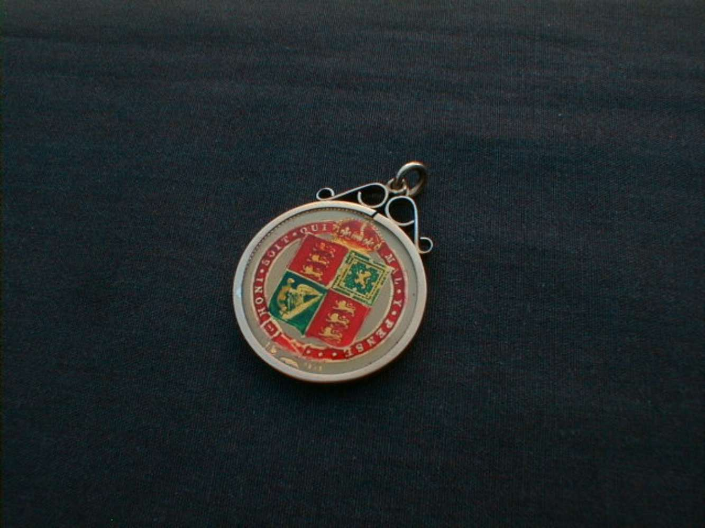
もう一つ、シリング銀貨アンティークの背景を。
トーマス・ケイズという人の研究によると、船舶や鉄道の発達によって国外への旅が増え た 1 9 世紀には、銀貨に穴をあけて、ジャケットの裏に縫い付けておくなどして、旅先での非常用通貨にするということが行われていたそうです。当時は多くの国で金銀を本位通貨とする貨幣制度が採用されていたので、世界の大国であったイギリスの銀貨は、いわばトラベラーズチェックのように、英国外でもかなり通用したというわけなのです。
そうしますと、今日見かける写真のようなペンダントヘッドは、元々はアクセサリーとして作られたわけではなく、こうしたトラベラーズチェックの代わりで、たくさんあった可能性があります。
これら二つの話を合わせて考えてみると、ヴィクトリア時代には穴あきシリングが、私たちが今思う以上に多くあったのではないでしょうか。 そして、巡りめぐってそれを手に入れた人たちの中には、 「 Lucky Shillin g 」の側面を重視して、ペンダントヘッドにされていくものも少なからずあったろうと思うのです。
わざわざアクセサリーにするには作りが簡単過ぎますが、さりとて銀貨に穴をあける仕事は誰もが出来るほど容易くはありません。初めはトラベラーズチェックとして使われ、後にはラッキー シリングとして大切にされてきたと考えれば、今日こうした品を見かける頻度が比較的多いことに納得がいくのです。
二、ヴィクトリアン スターリングシルバー バターナイフ with ピアストワーク
長さ 19.0c m 、重さ 43 g、 185 6 年 ロンドン
このバターナイフが作られたのはヴィクトリアン中期にあた る 185 6 年です。 柄にはピアストワークが施されています。この透かし細工をルーペで詳細に見てみると、断面には糸鋸を引いたギザギザ跡が残っていて、時間のかかった手仕事であることが分かります。 大きくてしっかりした雰囲気の品で、柄元のデザインや透かし柄の様子からもヴィクトリアン中期の時代の勢いを感じさせてくれるところは好感が持てます。
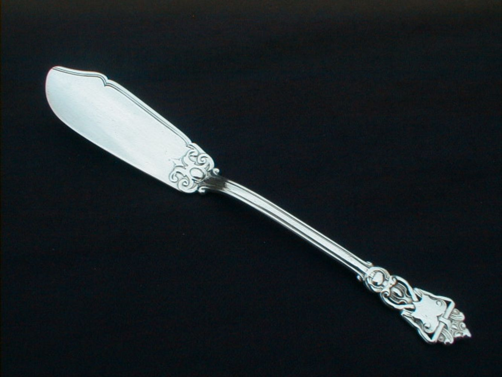
英国でアンティークという言葉を厳密な意味で使うと、百年以上の時を経た品物を指し、この品が作られたの は 1 9 世紀半ばですから、余裕でアンティークのカテゴリーに入ります。 アンティークにもいろいろありますが、やはり一世紀半という古さは大きな魅力となりましょう。
この品が作られた頃の日本史年表を眺めてみると、三年前 の 185 3 年には黒船来航で、『太平の眠りを覚ます上喜撰（蒸気船）、たった四杯（四艘）で夜も眠れず』の狂歌が流行っています。 四年後 の 186 0 年には、安政の大獄で引き締めを図った幕府の大老・井伊直弼が江戸城桜田門外の変で暗殺され、以降は幕府の権威も地に落ちて、明治維新への流れが決まっていく激動の時代でありました。 そう考えてみると、このアンティークがいかに古い品であるかお分かりいただけると思います。
英国のシルバーウェアではピアストワークの品を時々見かけますが、その制作年代を見てみる と 192 0 年代以降の作であることが多いようです。 この品はヴィクトリアン中期の透かしデザインということで、透かし物の走りとも考えられ、アンティークとしてはレアものの範疇に入るかと思います。 また、そもそもバターナイフの歴史はそれほど古くないので 、 185 6 年作のこの品はバターナイフとしても初期のアンティークと考えられます。
アンティークシルバーをお探しの、『不思議の国のアリス』ファンの方から、アリスにちなん で 185 6 年（二人の出会い）か 186 2 年（黄金の昼下がり）頃のアンティークはないでしょうかと、お問い合わせいただいたことがあります。 アンティーク収集にはいろいろな方法があると思いますが、こういう切り口も面白いと興味深く感じましたので、皆様にもご紹介させていただきます。
三 、 Mr. Punch's Cavalcad e、 A Revue of Thirty Years
縦 20.4c m 、横 16.2c m 、布張り装丁本 、 193 5 年 Londo n、 The Educational Book Company Lt d 刊
緑色の布地カバー部分にトレードマークになっている Mr. Punc h のシルエットが見えます。
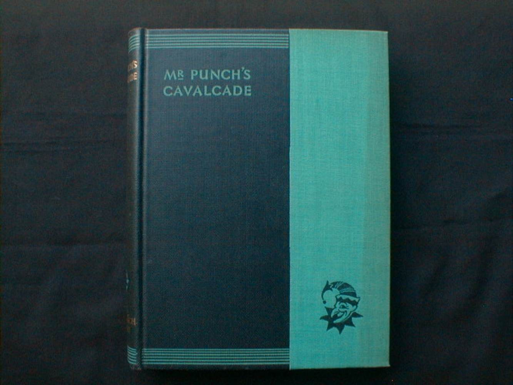
このパンチ素描画集は 、 193 0 年代に出版された全二十巻のうちの記念すべき第一巻です。 一巻目ということで 、 190 0 年頃か ら 193 0 年代までの歴史や社会を総観する内容となっており、『パンチ』に少し関心を持っていらっしゃる方には手ごろな一冊となっています。
『 Mr. Punch's Cavalcad e、 A Revue of Thirty Year s 』という題名は、日本語にしたら 『 Mr . パンチ オンパレード 、 3 0 年間のレビュー』と言うところでしょうか。 カタカナが多くて日本語と言えないかも知れませんが、この本の雰囲気や感じは伝わるかと思います。
英国事情の他にも、ロシア皇帝ニコライ二世、レーニン、ヒットラー、そしてチャップリンなど有名人が登場してくるので、見ていて興味が持ちやすいと思います。 また、歴史や世界の政治事情のみならず、当時のファッションなどを含めた社会の様子が分かるのも、アンティーク ファンには嬉しいところです。 硬軟両面から楽しめる一冊になっているのはお薦めポイントと思います。
布張り装丁のしっかりした本です。読み物もありますが、全ページにわたってパンチのイラストだらけで、合計 で 24 0 ページの中 に 20 9 のイラストが含まれており、見ごたえがあります。 パンチとしてはオーソドックスな風刺から、当時の服装など分かる多岐なイラストが特徴で、昔のイギリスがまるごと分かり、見て楽しめる本は嬉しいものです。
ヴィクトリアン終り頃からエドワーディアン、そし て 193 0 年代初め頃までのイギリスが見ていけるアンティークな資料なので、英国アンティーク研究のありかたの一つとしてお勧めしたいと思います。
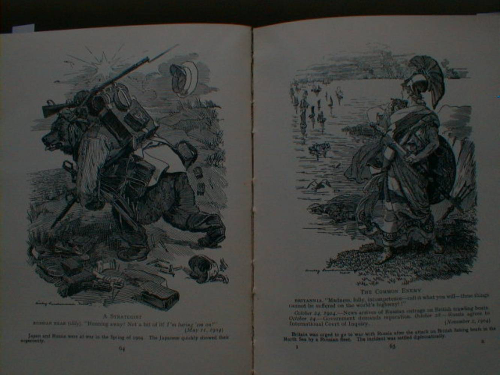
左の熊が逃げていくイラスト は 190 4年5月 1 1 日号掲載分です。 日露戦争開戦初期からの日本の優勢を伝えています。 また、右側 は 190 4年 1 1月2 日号のイラストで、ドッガーバンク事件直後のイギリスを描いております。 英国の象徴であるブリタニアが、ロシアに対してまさに剣を抜こうとしている様子です。
190 4 年の秋からロシアのバルチック艦隊は日本へ向けて航行中でした。 世界史のビックイベントとして、バルト海、北海、大西洋、喜望峰を経て日本へ向かうロシアのバルチック艦隊の動きが注視され、当時のイギリスでは日本海海戦の行方が大変な興味を持って見守られていたとの記録が残っております。
そし て 190 4年 1 0 月にはイギリス沖合いの漁場ドッガーバンクで、漁船を日本の水雷艇と誤認したバルチック艦隊が、英国漁船砲撃事件を引き起こして、英国世論が激高する事態となっています。
日本に向かって戦争に行くロシア艦隊が、途中で英国漁船を何百発もの砲弾で打ち払って、間違いと分かった後には救助もせずに通り過ぎてしまったのですから、誰だって怒るだろうと思います。
当時の日本とイギリスは日英同盟を結んでおりましたが、ドッガーバンク事件を契機にイギリス世論もおおいに日本に味方しました。 そしてイギリス政府によるバルチック艦隊の航海妨害などナイスアシストもあって、日本海海戦に向けて有利な展開となったのは幸いでした。
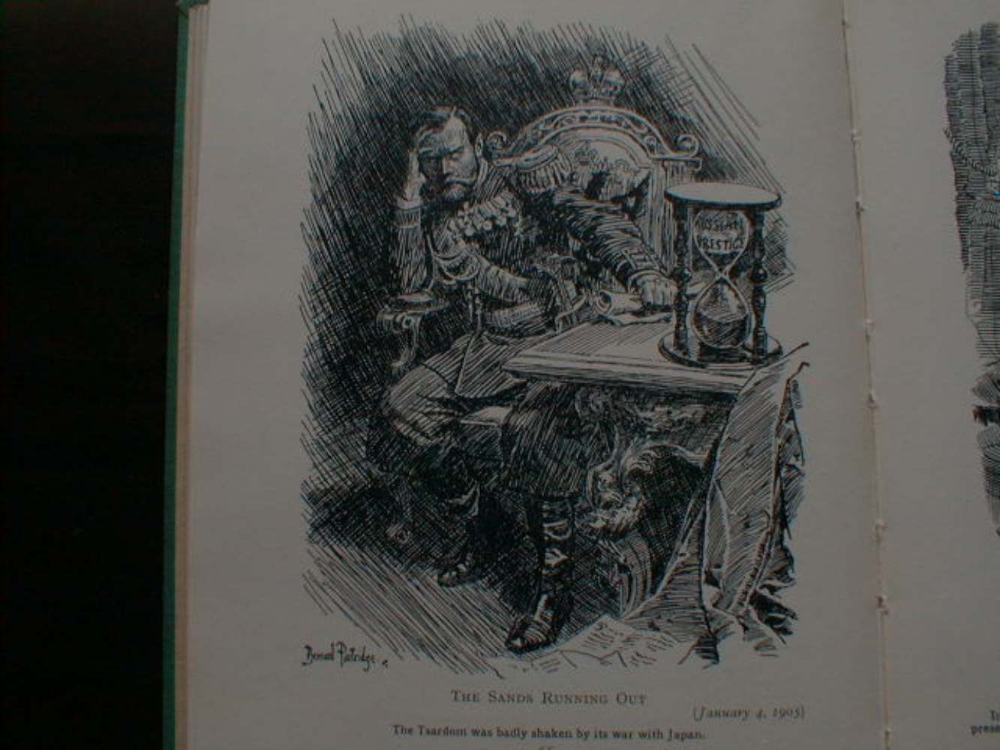
190 5年1月4 日号では、ロシア皇帝が頭を抱えている様子です。 Russian Prestig e （ロシアの威信）と描かれた砂時計の砂がなくなりかけております。
パンチはイギリスのユーモアを集約していると言われますが、ここまで当時の重たい時事問題のご紹介となりましたので、最後にイラストと解説で、イギリス流のユーモアやウィットの一端をご紹介してみましょう。
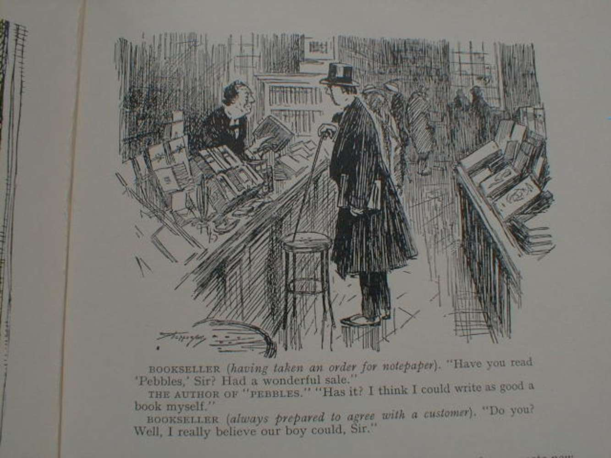
本屋の店員：「旦那、ぺブルはもう読まれましたか？ この本はよく売れましたよ。」
ぺブルの著者：「そうかね。 私でもそのぐらい書けそうに思ったがね。」
本屋の店員（いつでもお客さんに口を合わせることに慣れているので）：「そうですよね。ええ、実際のところ、私も、うちの子供でも書けそうなもんだと思うんですよ。」
四、ユンハンス 木製ケース 置時計
高さ 42.3c m、 189 0 年か ら 189 9 年までのユンハンス製 （ドイツ製）
アンティーク時計専門店で整備してもらいました。おそらく一世紀ぶりの点検整備だったと思います。 もともと実用可能なアンティークでありましたが、専門家に調整整備していただいて、状態はさらにアップしたと思います。
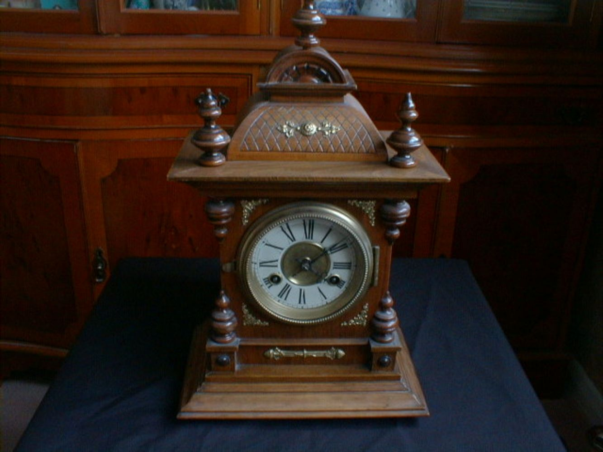
時計の駆動部に刻印された 『星型マークに JUNGHAN S 』 のメーカーズマークを対照表でチェックしてみると、写真の置時計が作られたのは 、 189 0 年か ら 189 9 年までの十年間と分かります。 アンティーク クロックで、製作年をこのレベルまで絞っていけるのは、ラッキーなことであります。
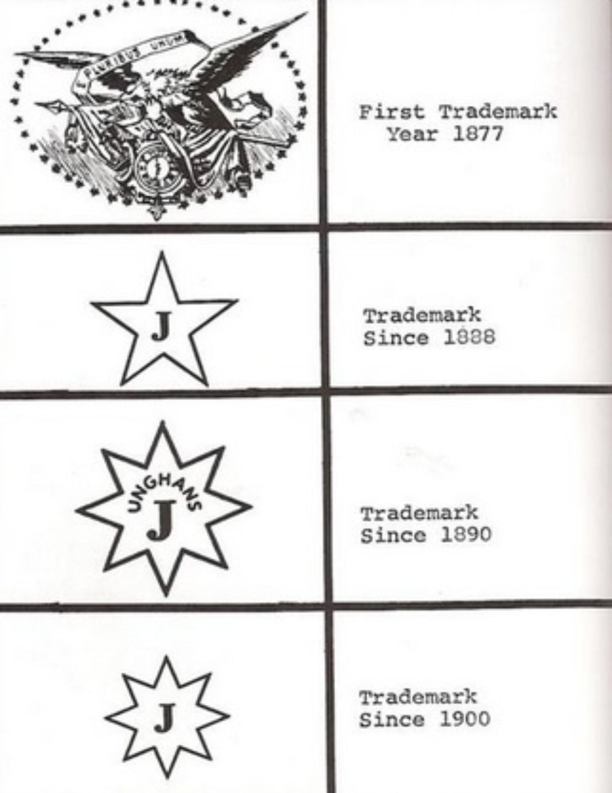
百年以上前に作られたボンボン時計が、今でも正確に時を刻んでくれることに感謝したい気持ちになります。
正時になるとストライクが響きます。 例えば三時なら、ボーン、ボーン、ボーンと三回のストライクです。 その他に、例えば三時半には、一回のストライクで半時間を知らせてくれます。 アンティーク クロックにもいろいろありますが、この時計は駆動用とストライク用の二つのネジを適度に巻いてやったり、面倒と言えばめんどうな時計です。 でもまたそこがアンティーク クロックの楽しみでもあります。
イギリスで暮らしていると、有名な国会議事堂のビッグベンをはじめとして、昔からの時計が日常の暮らしに溶け込んでいるのを感じます。 教会や町の中心には時計台があり、時を告げる鐘の音を耳にします。
田舎のカントリーハウスに泊まると、ウォールクロックのストライクが夜中に響くのをべッドの中で、うとうとと聞くとはなしに耳にすることもあります。 また郊外のマナーハウスでアフタヌーンティーをしていると、グランドファーザーズクロックの音が響き、ノスタルジックな気分になります。
そういえば私が子供の頃、祖父の家にも振り子時計があった記憶があります。 当時、日本でも振り子時計は割と一般的だったと思います。 いつの間にかあの時計達は姿を消してしまいました。
こうした経験もあってか、イギリスで暮らし始めて間もなくアンティークの振り子時計に興味を持ちました。 いくつかのアンティーククロック屋さんをまわって、気に入ったアンティーク置き時計を手に入れました。 裏面の扉を開くと振り子がゆれるボンボン時計です。 アンティークのクロックというのは楽しく不思議な物です、遠い昔に時を刻んでいたアンティークなのに、今の時も刻むことが出来るのですから。
時計の駆動用とストライク用、二つのねじを巻きます。 ねじ巻き用のキーですが、この鍵自体がいかにもアンティークなフォルムでいい感じです。
時計の進み具合を計りながら、振り子のボブを上げ下げして微調整したりと、手間がかかりますが、それがまた楽しみでもあります。 しかし一度調整してしまえば、百年前の時計でもけっこう正確に時を知らせてくれるものです。 時間毎に時を知らせるストライクは趣深く、アンティーククロックをタイムキーパーにする暮らしもなかなかいいなと思います。
五、三色ゴールド装飾 ヴィクトリアン フロント＆バック ９カラット ゴールド ロケット
直径 3.8c m 、ヴィクトリアン後期からエドワーディアン頃の英国製
このロケットは見ていて楽しくなれるアンティークと思います。 表と裏に９カラットゴールドの薄板を被せた作りで、「フロント＆バック ９カラットゴールド」と呼ばれる素材で出来ています。
デートレター等のホールマークが無いので年代特定が難しいのですが、フロント＆バック ９カラットゴールドという素材や、多色構造のゴールド装飾、そしてデザインの様子などからみて、ヴィクトリアン後期からエドワーディアン頃の品と思われます。
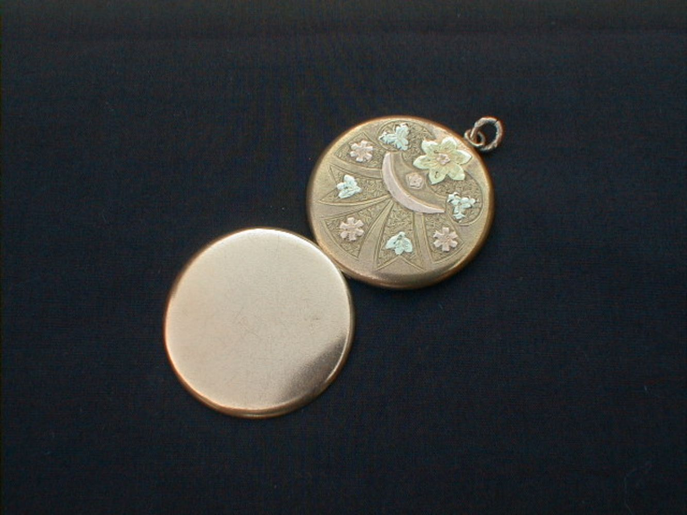
表側のフラワーデザインには、ローズゴールドの他にイエローゴールドやホワイトゴールドも使われていて綺麗で、三色ゴールド装飾もゴージャスな雰囲気に惹かれました。 ロケット上部に見える大きめな花はイエローゴールド装飾で中央部にはローズゴールドがワンポイントで効いています。 大きな花を一段目とすると、二段目と四段目はホワイトゴールドの飾りで、三段目と五段目の小さな花はローズゴールドの装飾になります。
９カラットゴールドは金含有量 が 37. 5 ％の合金ですが、金以外に銅を多く含む場合には、その色あいは赤みがかかっていて、イギリスではローズゴールドとも呼ばれます。 英国にはバラの花が好きな人たちが多いので、ゴールドアクセサリーでもローズゴールドが好まれるのでは？と思えます。 金純度の高いイエローゴールドよりも温かみがあるローズゴールドは、ベリーブリティッシュな装飾素材なのです。
中央には三日月の飾りがあって、そこから旭日旗のように帯状飾りが四方向に伸びております。 当時のイギリスで流行ったジャポニスムのモチーフブックから影響を受けているように思います。
どうして、こういった和風モチーフのゴールドジュエリーがヴィクトリア時代のイギリスで見られるかというと、それは百五十年以上にわたる日本美術研究の蓄積がイギリスにあるからです。
１８５３年のペリー来航以来、日本の工芸が広く西欧に紹介され、英国シルバーの世界にも日本の伝統的なモチーフとして蝶などの虫、飛翔する鳥、扇、竹、さくら等のデザインが取り入れられていきました。１８７０年代、８０年代のこうした潮流はオーセンティック ムーブメントとして知られています。
その後のジャポニスム研究は、モチーフブックなどの成果となって、以下のような書籍が次々と発表されていきます。
「 Art and Art Industries of Japa n（ 187 8 年 、 Sir Rutherford Alcoc k ）」、 「 A Grammar of Japanese Ornament and Desig n（ 188 0 年 、 Cutle r ）」、 「 Book of Japanese Ornamentatio n（ 188 0 年 、 D.H.Mose r ）」
そし て 188 0 年代の後半にはジャポニスム モチーフブックの集大成である 「 Japanese Encyclopedias of Desig n（ Batsfor d ）」が出て 、 Japanese craz e （日本趣味の大流行）のピークとなりました。
ヴィクトリアン後期の英国にあってはジャポニスムが新鮮で、大きな顧客需要があり、モチーフブック等の基礎資料も充実していたことが、今日私たちが日本趣味な英国アンティークにお目にかかれる理由なのです。 百数十年も前に多くのイギリス人たちが日本に大いなる関心を持っていたことには驚かされます。
ちなみに、イギリスにおけるジャポニスム研究書のさきがけとなった 「 Art and Art Industries of Japa n（ 187 8 年 、 Sir Rutherford Alcoc k ）」の著者であるオールコックという名前、聞いた覚えのある方もいらっしゃるかと思います。
サー・ラザフォード・オールコックは、幕末の日本で数年間暮らしたイギリスの初代駐日公使です。 当時のイギリス公使館は、現在の品川駅から徒歩七分、港区高輪の東禅寺に置かれていましたが、オールコック在任中には、攘夷派浪士が英国公使館を襲撃した東禅寺事件など起こっています。 まさに命がけの日本勤務であったろうと思います。 彼は幕末日本滞在記である 『大君の都 （岩波文庫 上・中・下）』も残しています。
オールコックと言えば、幕末期のイギリス外交官としての仕事に注意が向きがちですが、一方では日本美術に傾倒し、 「 Art and Art Industries of Japa n（ 187 8 年、 Sir Rutherford Alcoc k ）」という著作も残しているわけで、日本のよさを広く海外に紹介してくれた、よき広報官という側面もあったのでした。
オールコック初代駐日公使、 「 Art and Art Industries of Japa n 」、ヴィクトリア時代 の Japanese craz e （日本趣味の大流行）、ジャポニスム研究、数多くのモチーフブック等々、こういう歴史的な背景があって、イギリスで作られ、現代に到っているゴールドジュエリーというわけです。
六、ロザリオ クロス with スタンホープ
クロスの縦 4.1c m 、ロザリオ一周の長さ 57c m、 191 0 年代、英国製
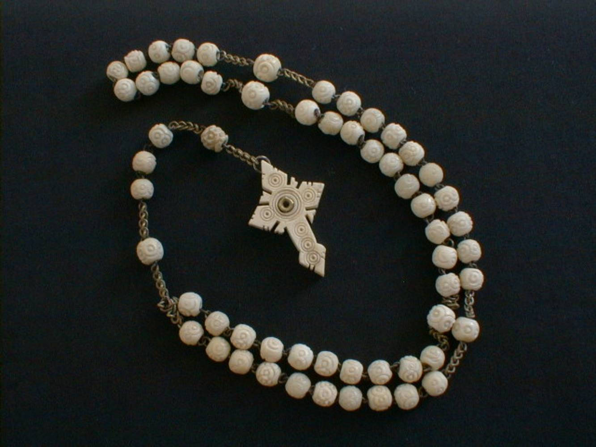
クロス中央にある直径わず か 1.5m m ほどのレンズを覗き込むと、「幼子のキリストを膝に抱いて座った聖母マリアの前に跪く聖ドミニクの図」のマイクロフィルム写真がとてもはっきりくっきりと見えます。どんな絵かお伝えしようと思いざっと描いてみました、本当はもっと精密な宗教画なのですが、ご参考まで。
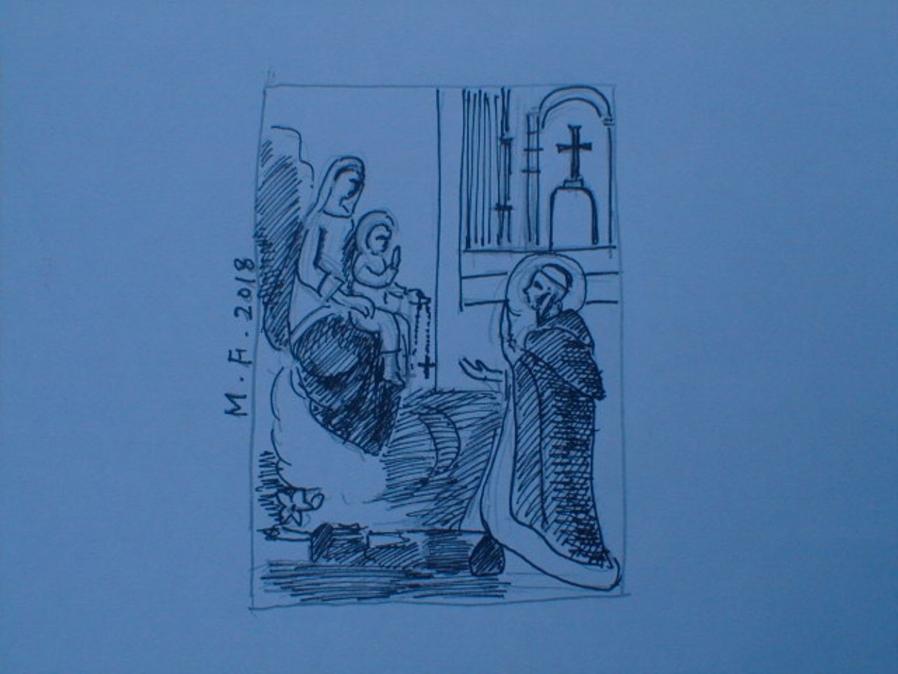
この仕掛けはスタンホープと呼ばれます。ヴィクトリア中期にクリスタル素材のスタンホープレンズとマイクロフォト技術が開発されたことによって、ピンの頭ほどのマイクロフォト写真に、お祈りの図などを撮って、それを拡大して見せる仕掛けが可能になったものです。スタンホープ は 187 0 年頃か ら 192 0 年頃まで主に作られていました。
その後はスタンホープレンズを作るメーカーがなくなってしまい、この技術も絶えました。今日では技術を復活させてスタンホープを作っている愛好家のメーカーがアメリカに一社だけあるそうです。
先日、英国でスタンホープ研究の第一人者の方とお話させていただく機会があって、いろいろ教えていただきました。何でもその道の専門家がいて、ずいぶんマイナーなことでも調べている人がいるというのが、イギリスという国の面白いところだと思います。また、イギリスにはスタンホープ コレクターズクラブがあって、年に一度はミーティングを開いて、セミナーや情報交換をしているとのことでした。
スタンホープが夏目漱石の『吾輩は猫である』に出ていると教えていただきました。
夏目漱石 『吾輩は猫である』 六、迷亭君と細君の会話
迷亭君は今度は右の袂の中から赤いケース入りの鋏（はさみ）を取り出して細君に見せる。「奥さん... この鋏を御覧なさい... ここに蠅の眼玉くらいな大きさの球がありましょう、ちょっと、覗いて御覧なさい」 「おやまあ写真ですねえ。どうしてこんな小さな写真を張り付けたんでしょう。」
私が思いますには、スタンホープが英国で流行っていた頃に、漱石はロンドン留学しておりますので、漱石はイギリスでスタンホープを見知る機会があって、そんな経験が『猫』にもあらわれているのだろうと考えます。
今ではあまり見かけないスタンホープ、漱石の時代には流行りものだったことが、うかがい知れるのは、このアンティークの面白さと感じます。
七、ヴィクトリアン スターリングシルバー ヴェスタ
縦 3.9c m 、重さ 18 g、 189 9 年 バーミンガム アセイオフィス
写真の品はヴェスタと言って、スターリングシルバーのマッチケースです、スワンマッチという特別なマッチを入れて使います。 小花や葉っぱの植物文様やウェーブパターンのエングレービングが素晴らしく、背景部分の彫刻も繊細そのものと言えましょう。 スワンマッチの長さを切り揃えて収納する手間がかかりますが、そうした少しの世話というのがまたアンティークを扱う楽しみとも思うのです。
縦の長さが 3. 9 センチあって、持ちはかりは１８グラムの銀ですので、いつも持ち歩く銀としては、しっかりぎゅっとした銀塊の風情を醸しております。 しかし、ヴェスタとしては、小振りな銀であり、スモールサイズの銀製ヴェスタはあまり見かけないことから、レアものアンティーク シルバーと言ってよいでしょう。
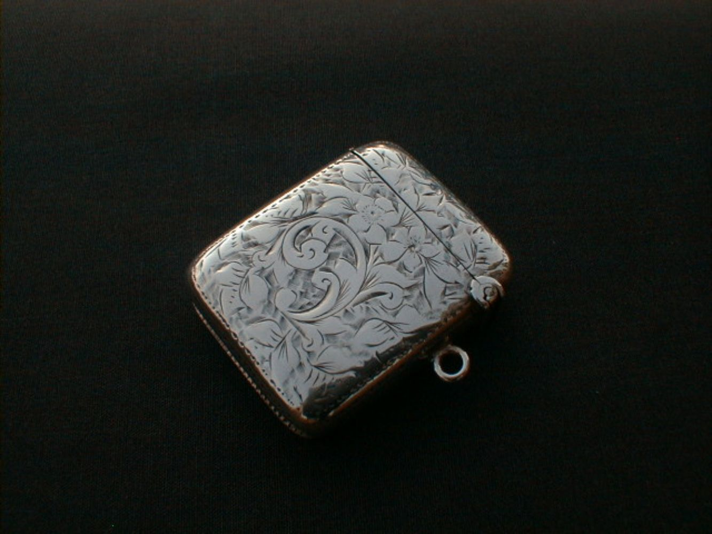
両面に施された手彫りの彫刻レベルは素晴らしく、百年以上前の銀職人さんの匠の技が堪能できる、そんなヴィクトリアーナの銀であります。
クイーン・ヴィクトリアが若 干 1 8 歳の若さで英国王位を継承したの は 183 7 年のことで、この年か ら 190 0 年まで の 6 4 年間がヴィクトリア時代にあたります。ヴィクトリア女王は在位期間が長かったことと、その時代は英国の国力が格段に伸張した時期と重なっていた為に、イギリスの中でも特にポピュラーな国王となりました。アンティークの分野にあっても、この時代の物品を指すヴィクトリアーナ （ Victorian a ）という用語もあって、ヴィクトリア時代の品物を専門に集めるコレクタターが大勢いるわけなのです。
スワンマッチはそのまま入れると、ちょっと長いので、３ミリほど切り揃えが必要で、収納できるマッチは十数本です。こういう世話は、身の周り品として面倒ではないかと思われるかも知れませんし、マッチの切り揃えは、無駄な時間の使い方のようにも思えますが、またそれが楽しくもあります。ほっと一息できるときに、アンティークと一緒にゆっくり時間を過ごしてみる、そういう昔道具ではないかなと思っております。
マッチを入れて、ヴェスタを振るとシャカシャカと音がして気分がいいし、彫刻が綺麗な一級品、かわいらしい銀製ボックスです。エングレービングが美しい品なので、見ているだけで楽しく、そして百年以上前のアンティークになりますが、今でも実用に問題なしです。ヴェスタのエングレービングにもいろいろありますが、この品の彫刻の繊細さはかなりレベルが高いと思います。
蓋を開けると、ブリティッシュ ホールマークが刻印されているのが分かります。ホールマークは順にメーカーズマーク、スターリングシルバーを示すライオンパサント 、 189 9 年のデートレター、そしてバーミンガム アセイオフィスのアンカーマークになります。
深めなタッチで彫られた植物文様やウェーブの背景に影のように見える部分は 、1 ミリ間隔に何本もの細かさで彫刻線を引いた仕事です。それがほぼ全面にわたって施されている訳で、時間と手間のかかったアンティークであることが分かります。ルーペを使って鑑賞いただくと当時の限界的な手仕事のレベルの高さに驚かれると思います。
スワンマッチはマッチ箱で擦るのではなく、映画などで見たことがあると思いますが、靴の裏などザラザラしたところに擦りつけて発火させるマッチで、日本ではロウマッチとも呼ばれます。ヴェスタの底はギザギザになっているので、スワンマッチならこのギザギザ底での摩擦で火がつくのです。
私はタバコを吸いませんが、アンティーク ランプやキャンドルの灯火を見ていると落ち着いた気分になれるので、これが日課のようになっていて、灯を入れるにはやはりヴェスタがよろしくて、そのため必需品になっています。また、ロウマッチをシュッと擦ると映画の主人公みたいな気分にもなれるので、何は無くとも火をつけてみたりもします（少し変ですが。）。
以前にヴェスタをお買い上げいただいたお客様からは、「アクセサリーとして使用しますが、スワンマッチを収納させておいてサプライズを楽しもうと考えています。」ということで、タバコ以外の使い途という点で私と同じだったのは嬉しく思いました。
スワンマッチは英国では簡単に手に入ります。 ニュース エージェントやスーパーマーケットでも売っていることからして、愛好家が多いのだろうと思います。スワンマッチの箱には 「 since 188 3 」とありますので、ヴィクトリアン以来の伝統というわけです。
日本でスワンマッチを入手する方法について、お客様から以下の情報をいただきましたので、ご参考ください。
『畑様
仕事におわれてメールチェックが遅れましてすいませんでした。スワンマッチですが、兼松日産農林というマッチ会社が日本に輸入しております。そこはマッチ愛好家のホームページを持っていて、マッチ取扱店の案内や通信販売も行っています。アドレス は http://www.nostalgia.co.j p です。
東京都内に販売店があるので都内の方は直接買いに行くのもいいと思います。私も行ってみましたが、いろんなマッチがあって楽しかったですよ。店の主人と話をしてみると意外とマッチ愛好家と言うのは多いようです。愛好家が増えれば入手しやすくなると思うので宣伝どうぞよろしくお願いします。（笑）
新潟は夏から冬へまっしぐらと言う感じで、日に日に寒くなっております。晩酌の酒が、焼酎の水割りからお湯割に変わるのももうすぐでしょう。それではまた』
いつも英吉利物屋をご贔屓いただくお客様からの最新情報によりますと、兼松日産農林のマッチ部に問い合わせたところ、スワンマッチが販売終了になっているそうです。イギリスではどこでも手に入るようなマッチでありますことから、日本の販売店が入手することも難しいことではないように思います。日本でもどこかで取り扱いがあるよう願っています。
八、木製鏡筒ボディー＆ブラス製 単眼鏡
伸ばした長さ 18.2c m 、収納時の長さ 9.8c m 、対物レンズの口径 3.1cm
ボディーの部分は木製で、伸縮部や対物＆接眼レンズのフレーム部分はブラス製です。 かなり渋い味わいの伸縮式単眼鏡と思います。正確に言えば、昔、ガリレオが木星の四つの衛星を発見したことで有名なガリレオ式望遠鏡と呼ばれるものです。
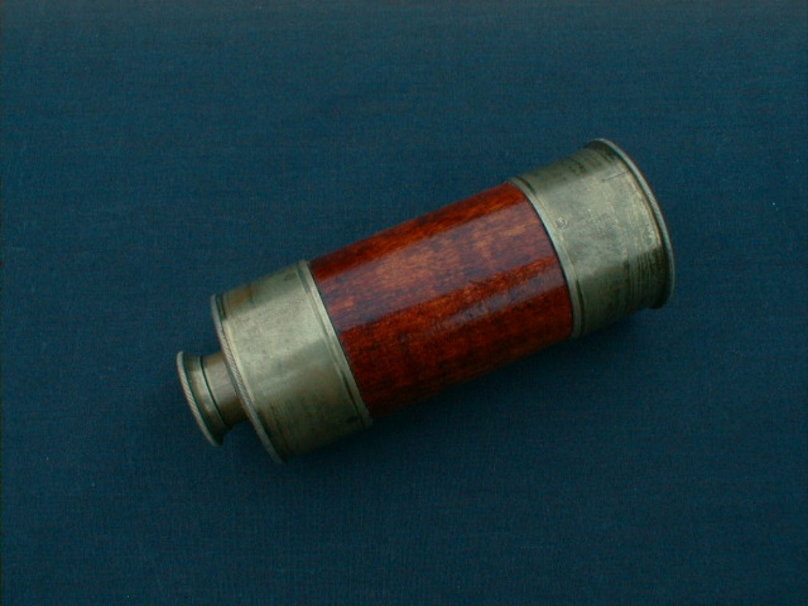
接眼レンズはブラスのフレームごと、取り外しが出来て、内部の掃除が可能です。 求めた時にはレンズの内側にホコリがありましたが、綺麗になりました。 古い望遠鏡でありますが、今でも十分に実用可能です。 ピント合わせは、遠くを見る時には伸縮部を短めにし、近くを見るときは伸縮部を長め引き出して調整します。
興味深く思ったのは、意外と近いところでもピントがあって見えることです。 伸縮部全体がかなり長い構造の為でありましょう。 伸縮部を長めに伸ばして見ると、３メートル先あたりでもピントがあって綺麗に見えます。 通常の双眼鏡やオペラグラスなどですと、対物＆接眼レンズ間の距離合わせ稼動範囲が短いので、あまり近いところではピントが合わず、ぼけて見えるのが普通です。
アンティーク 単眼鏡の使い勝手や性能を調べてみました。 この時期のイギリスはあいにく天気が悪く、星空が見える好天の夜を待っておりましたが、ようやく機会に恵まれました。
写真の単眼鏡＝ガリレオ式望遠鏡は、対物レンズに凸レンズを、接眼レンズに凹レンズを使用することで、正立像をむすびますので、地上用に使いやすく出来ています。 ちなみに一般の望遠鏡はケプラー式と呼ばれて倒立像であり、宇宙には上下がないので、星を見るには構いませんが、地上で使うと天地が逆転して困ります。
ガリレオ式の望遠鏡には、視野が狭いという特徴があります。 接眼レンズの中央に目を置いても、視野の周辺は暗くなり、見える範囲が狭まってきます。 このことはガリレオ以来、この望遠鏡についてまわった構造的な問題で、その為にこの方式は望遠鏡の主流にはなっていきませんでした。
ただ、古いもの好きに言わせれば、視野の周辺が暗くなるガリレオ式の見え方にはなんともアンティークな風情を感じます。 視野が狭いといわれるガリレオ式で、いったいどの程度なのか、実験してみました。
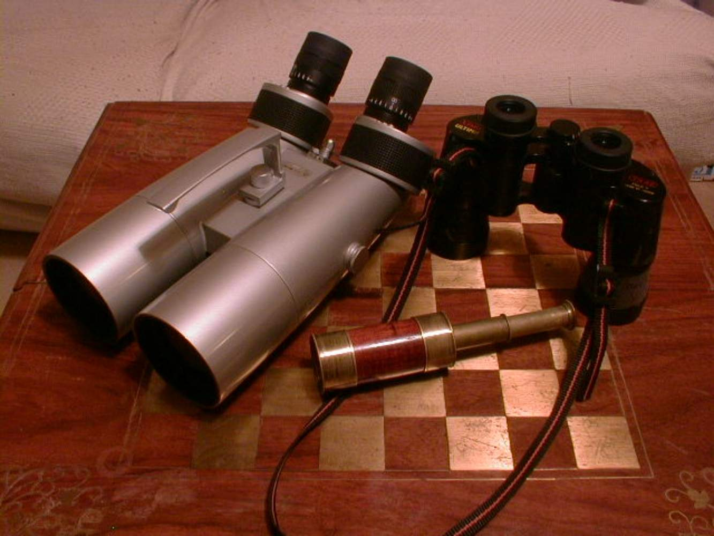
写真で左に見える対空双眼鏡の実視界 は 3. 3 度、右の双眼鏡 は7 度あります。 実視 界3 度というと、例えば昨晩ですと、オリオン座が見えていて、有名な「オリオン座の三ツ星」は端から端まで３度ほどになります。 対空双眼鏡だと三ツ星の端から端がちょうどおさまる感じで、双眼鏡だと余裕で三ツ星が視野におさまります。 見比べてみて、単眼鏡の視野は４度程度と判断しました。 狭いとは言え、数字にすると意外とあるなと思いました。
私は視力が弱いので、メガネで見ても、プレアデス星団（昴）の七ツ星が数えられませんが、この単眼鏡を通してみれば、星数がカウントできました。 対空双眼鏡をオリオン大星雲に向ければ、圧倒的な迫力で星の世界が眼前に展開します。 この単眼鏡にはそんな力はありませんが、ガリレオはこんな望遠鏡で星を見ていたのかと思えますし、視力のよくない私としては、昴が識別できたところで丸印を上げたいと思います。